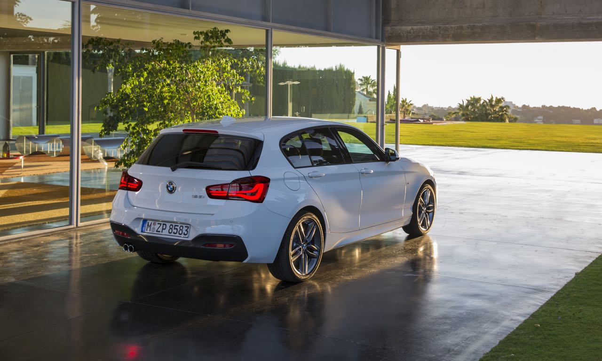
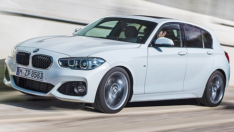
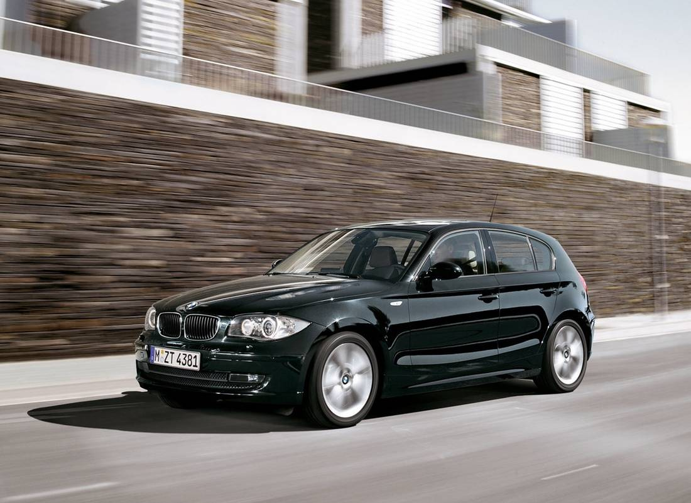
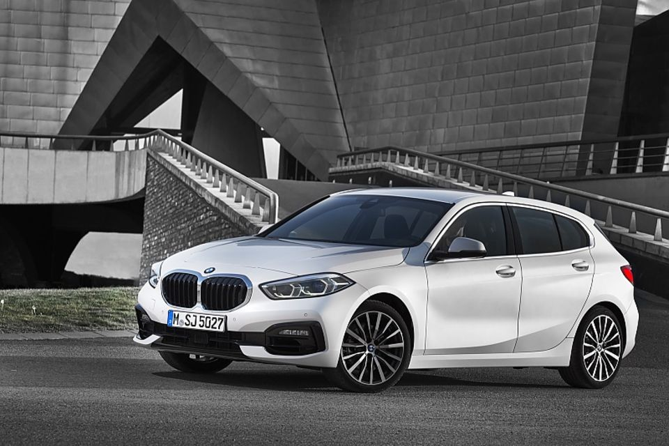
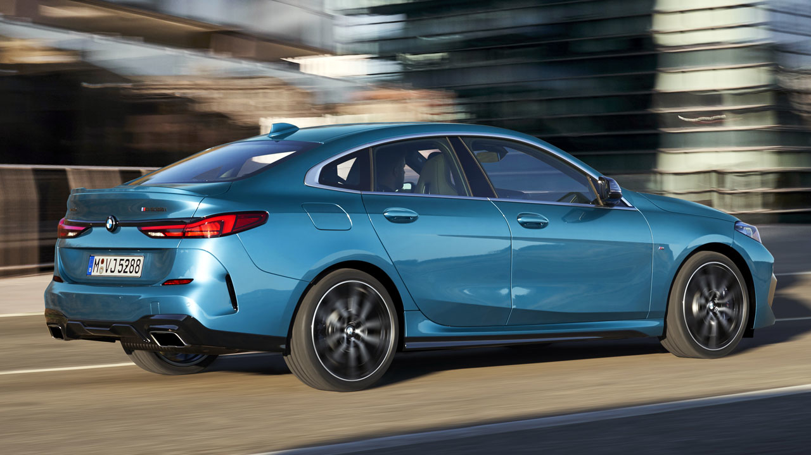

Der BMW 1er ist ein kleiner Premium-Kompaktwagen, der seit 2004 von BMW hergestellt wird.
Er ist in der Regel als Fünftürer Kompaktwagen erhältlich, obwohl es auch eine dreitürige Version also Coupé oder Cabrio gibt.
Der 1er BMW ist in verschiedenen Motorvarianten erhältlich, darunter Benzin-, Diesel- und neuerdings auch Hybridmodelle.

Vorteile des BMW 1er :
Fahrdynamik
Technologie
Zuverlässigkeit
Günstig im Unterhalt sowie Einkaufspreis
Geeignet für die Stadt
Nachteile des BMW 1er:
Platzangebot
Komfort zumindest hinten
Wertverlust
 
Fazit: Ein Günstiger Alltagswagen der einem komfortabel, sicher und schnell von A nach B bringt.
